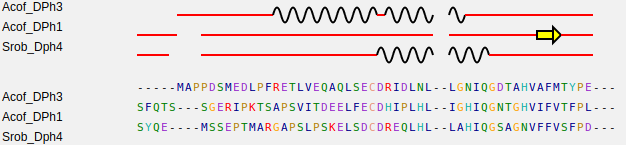

2DSS gives you an overview of secondary structure features like alpha-helices, extended beta-sheets and coiled coils. It is a friendly Web server for extracting and rendering a comprehensive analysis of primary and secondary protein structure information in an automated way. Sequence similarity search and multiple sequence alignment (MSA) are methods of choice for solving or interpreting bioinformatics and biological problems. They can address many questions and thus are the basis of numerous evolutionary and comparative studies, e.g. homology identification, protein function, structure and interaction predictions, computer-aided mutagenesis, phylogenetic analyses, etc.
Welcome to the 2DSS web site
View 2D alignment

The first one is a flat figure presenting the amino acid sequence of the PDB query adorned with secondary struc- ture elements, solvent accessibility and hydropathy scales per residue (see an example in Figure 1A). In addition and if applicable, non-crystallographic and crystallographic pro- tein:ligand and protein:protein contacts as well as disulfide bridges are highlighted by specific markers. Several com- mon hetero-compounds are automatically kept and are sub- sequently depicted by given symbols on the figure. The user can manually keep non-recognized hetero-compounds or monatomic elements contained in his PDB query.
Compare Predictions

The first one is a flat figure presenting the amino acid sequence of the PDB query adorned with secondary struc- ture elements, solvent accessibility and hydropathy scales per residue (see an example in Figure 1A). In addition and if applicable, non-crystallographic and crystallographic pro- tein:ligand and protein:protein contacts as well as disulfide bridges are highlighted by specific markers. Several com- mon hetero-compounds are automatically kept and are sub- sequently depicted by given symbols on the figure. The user can manually keep non-recognized hetero-compounds or monatomic elements contained in his PDB query.